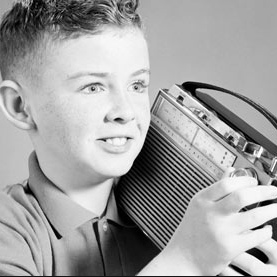

Совсем скоро будет 20 лет, как я окончил школу. Знаю, ты удивлён, но это действительно так.
В детстве, не любить школу — логично. Но взрослые вокруг повторяли, мол вырастешь, тогда поймёшь, как же в школе было хорошо. Совсем скоро будет 20 лет, как я окончил школу. В школе не было хорошо.
Как только я достиг более-менее вменяемого возраста (классу к седьмому) я понял всю ценность образовательного процесса в средней советской средней школе. Вернее отсутствие этой ценности.
Я с начальной школы довольно много читал, наверняка больше половины учителей, поэтому в моей колоде всегда были два важных козыря — грамотность и эрудиция. Вроде как странно, но грамотность и эрудиция не всегда в чести в школе. В школе нормально быть частью серой массы, так всем спокойней, этот урок и дали мне преподаватели.
В большинстве сельских средних школ выпускники, кроме аттестата, ввиду перспективы бесперспективности, получают ещё и какую-то специальность. В нашей — девочки, кажется, что-то шили, а мальчики учились полезному. По выпуску получали кроме аттестата ещё и права категории С, а, чуть подсуетившиеся, ещё и А и B. Клёво же? Я, кажется единственный из трёх выпускных классов в тот год, умудрился выйти из школы без прав. Авторитарный стиль общения преподавателя автодела сделал своё дело. Мы не сработались. «Учить билеты по ПДД» в нашей школе, думаю не только в ней, называли по привычке «решать перфокарты». Я начал доказывать, что перфокартами называть что-то без дырочек неграмотно. Был не понят одноклассниками и носителем авторитарного стиля (кажется, его звали Михалыч). Потом психнул, не стал ходить на занятия, во время уроков торговал в киоске шоколадками. Преподавателю сказал, что, когда мне понадобятся права, я их куплю. Он тоже психнул.
Детекторный приёмник — самый простой, базовый, вид радиоприёмника.

С учителем физики как-то поспорил о том, что можно легко сконструировать радиоприёмник, который не будет нуждаться в источнике питания. Учитель физики уверял, что такого не может быть.
Кажется, радовал учителя литературы. Большое количество прочитанных книг, позволяло мне писать грамотные и стилистически неплохие сочинения по произведениям из школьной программы. Причём сами произведения я не читал, в лучшем случае пролистывал. До сих пор не понимаю смысла в чтении «Отцов и детей» и прочих «Преступлений и наказаний», когда у тебя на уме девочки, мотоциклы и портвейн.
Не давалась математика. Первыми не дались то ли интегралы, то ли логарифмы. Потом уже не давалось ничего.
Химия не давалась. Учительница спросила поступаю ли я «на экономический» и поставила 4, поняв, что химия мне не нужна.
К выпуску меня колбасило от желания самовыразиться настолько, что я, в качестве выпускного экзамена «на выбор», выбрал английский. Его преподаватель как раз, уверен, не подозревая, и дала мне самый важный школьный урок. По итогам экзамена она сказала: «Максим, на фоне общего болота я поставлю тебе четыре, но ты не знаешь даже на три». Эта формулировка — «на фоне общего болота» — всплывает в голове у меня с тех пор с завидной периодичностью.
Разве может обычный начальник чему-то научить?
Не думаю, что мне не повезло с учителями. Это самая очевидная отговорка, но я так не думаю. Учителя были обычными взрослыми людьми, которые «закончили пед» и стали называться учителями. Главная проблема в том, что они являлись взрослыми и ощущали себя таковыми. Учителя не были друзьями, они не были партнёрами или хотя бы наставниками. Они были начальниками детей. Разве может начальник чему-то научить кроме как трудовой дисциплине?
Как и всякий мужчина среднего возраста, разумеется, я скучаю под детству. По запахам, по мелодиям, по дружбе. По живым ещё близким людям. Но я легко отделяю эти составляющие детства от школы. Школу не нужно воспринимать как технологию получения знаний. Роль средней школы сегодня — социализировать среднего человека. Было бы неплохо, если бы школа помогала профориентировать. Как средство приобретения знаний и навыков средняя школа абсолютно нерентабельна.